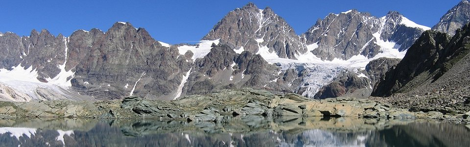
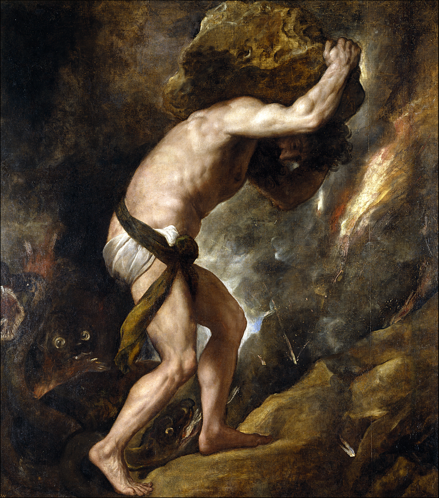
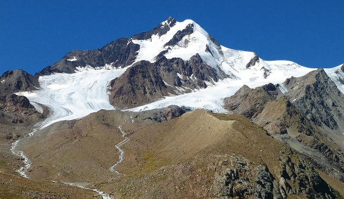

Sin dalle sue origini l'uomo ha cercato di dare una risposta alle domande fondamentali sulla vita, l'universo e tutto quanto. Ogni popolo, ogni cultura, ogni religione ha dato risposte diverse a queste domande, e la domanda su cui queste risposte divergono maggiormente è quella su ciò che succede dopo la morte.
Vi proponiamo oggi un’antica credenza, originata negli isolati borghi di un’arcaica Valtellina, che riguarda i cosidetti “Cunfinàa”, ovvero le anime “confinate” in posti romiti e inospitali, costretti a lavori spesso faticosi e debilitanti, come il dover minare la dura roccia delle montagne della zona, o il pesante trasporto di grandi massi lungo rapidi pendii.
Ovviamente, secondo la credenza, non tutti gli uomini sono destinati a questo futuro degno di un mito greco. Solo le anime più nere, che in vita si sono distinte per la loro malvagità e per le loro cattive azioni, sconteranno le proprie pene in questo atroce destino, diventando cunfinàa e dovendo compiere lavori sfiancanti per un periodo adeguato ad espiare i propri peccati o, secondo altre versioni per l’eternità.
Questa antica credenza viene meravigliosamente illustrata nell’opera “Montagne e Valli incantate” di Aurelio Garrobbio, che scrive:
"Chi si è macchiato di gravi colpe deve scontare una pena e la pena è in proporzione alla colpa. Se i penitenti rimanessero tra i vivi, turberebbero la loro pace rendendo impossibile la vita. Anche a questo la suprema giustizia ha pensato, ed ha confinato i colpevoli in località appartate, lontane dal mondo dei viventi... L'intera notte dura il febbrile lavoro: devono riportare in alto i massi che il torrente nella sua furia ha precipitato giù per la valle. Qualcuno se li carica sulle spalle, e sono i blocchi piú piccoli; in due, in tre, in quattro — se in due, in tre, in quattro hanno violato leggi dell'onestà e della bontà — si aggrappano ai massi grossi e non riuscendo a sollevarli li fanno rotolare sul terreno. Vana è però la fatica! Solo nelle tenebre le ombre possono operare; con le luci antelucane sono costrette e dileguarsi, mentre i massi spostati o trascinati ritornano al posto di prima.”

La punizione di Sisifo, Tiziano Vecellio. Olio su tela, 1548 ca. Il mito di Sisifo, destinato a trasportare in eterno una roccia in cima ad un monte, ricorda il destino dei cunfinàa
I cunfinàa vengono relegati (o “confinati”, da cui deriva il nome) in posti remoti principalmente della Valtellina, ma anche in altri luoghi sperduti tra le valli lombarde. Tra le località note per la presenza di queste anime spiccano i boschi di Pezzel, il monte delle Mine e i Corni Bruciati, oltre a zone più lontane, come la Valle del Muretto ed i boschi di Berbenno, nella bergamasca. In questi luoghi sono stati sentiti rumori di mazzate sulla roccia, e il suono di grandi massi che rotolano lungo i versanti dei monti.
La tradizione vuole che i cunfinàa possano anche essere osservati da chi si reca la notte in queste zone, senza correre grossi rischi. Il vero tabù sta però nel non raccontare nulla di questi incontri, evento che causerebbe la dannazione dell’osservatore che narra ciò che ha visto. E con dannazione ovviamente si intende che questi sciagurati, dopo la morte, condivideranno il destino atroce delle povere anime confinate.

Cevedale, parco nazionale dello Stelvio. In questa zona pare si aggirino i confinàa, responsabili delle numerose scariche di pietre lungo le sue pareti.
I rari racconti, di cui però non si conosce l’autore, descrivono questi spiriti come grandi figure scure con un berretto verde, che quando vengono visti portano un dito alla bocca intimando il silenzio.
Nonostante i cunfinàa vengano generalmente descritti come disinteressati agli uomini che li vedono e quindi innocui, alcuni ipotizzano che ci possa essere il loro zampino quando le montagne “si muovono”, come nel caso di slavine, frane o distacco di massi.
Questa credenza, oggi ormai quasi dimenticata anche dagli abitanti della Valtellina, rimane però radicata tra chi “vive” maggiormente le montagne e i boschi incontaminati, come i pastori di capre e i piccoli contadini, che in questo mondo ormai globalizzato rimangono fedeli alla natura, da cui veniamo e a cui torneremo, in un modo o nell’altro.
E voi, se passerete per le sperdute valli alpine, ricordate: NON RACCONTATE NULLA DI LORO!!! (se però non credete a queste leggende e volete condividere con noi questa o altre esperienze scriveteci qui.)